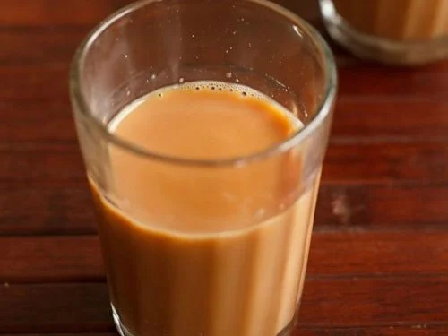

Cutting Chah

Description:
Tea but Indian, usually served with the Classic Parle-G biscuits or just itself as a refresher and is a norm of making it at specific timings in an Indian household so the family could gather, chat or relax
Ingredients:
- 8 oz water
- 4 oz whole milk
- granulated sugar to taste (about 2 heaped teaspoons per serving, traditionally)
- 1 heaping tablespoon of black tea empty out tea bags to make a tablespoon if you don’t buy loose leaves
Instructions:
- Bring water and milk to a simmer with desired spices in a medium saucepan.
- Reduce heat to lowest setting and add tea.
- Steep until tea takes on a deep, pinky-tan colour, about 3 minutes, stirring occasionally.
- Strain into a cup and stir in sugar to taste.